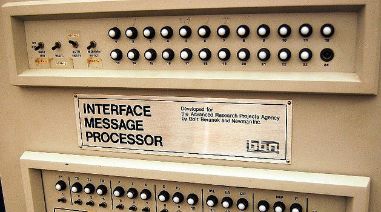

Rețeaua Agenției pentru Proiecte de Cercetare Avansată (ARPANET) a fost prima rețea de comutare de pachete cu zonă distribuită cu control distribuit și una dintre primele rețele care a implementat suita de protocol TCP / IP. Ambele tehnologii au devenit baza tehnică a internetului. ARPANET a fost înființat de Agenția pentru Proiecte de Cercetare Avansată (ARPA) a Departamentului Apărării al Statelor Unite.
Primele calculatoare au fost conectate în 1969 și Programul de control al rețelei a fost implementat în 1970. Dezvoltarea suplimentară a software-ului a permis conectarea la distanță, transferul de fișiere și e-mail. Rețeaua s-a extins rapid și a fost declarată operațională în 1975 când controlul a trecut la Agenția de Comunicare a Apărării.
Accesul la ARPANET a fost extins în 1981, când Fundația Națională pentru Științe (NSF) a finanțat Rețeaua de Informatică (CSNET). La începutul anilor 1980, NSF a finanțat înființarea de centre naționale de supercomputere în mai multe universități și a oferit acces la rețea și interconectivitate la rețea cu proiectul NSFNET în 1986. ARPANET a fost dezafectat în mod oficial în 1990, după ce parteneriatele cu industria de telecomunicații și computer au asigurat extinderea sectorului privat și comercializarea viitoare a unei rețele extinse la nivel mondial, cunoscută sub numele de Internet.
Din punct de vedere istoric, comunicațiile de voce și date se bazau pe metode de comutare a circuitelor, după cum se exemplifică în rețeaua telefonică tradițională, în care fiecărui apel telefonic i se alocă o conexiune electronică dedicată, cap la cap, între cele două stații de comunicare. Conexiunea este stabilită prin comutarea sistemelor care conectau mai multe puncte intermediare de apel între aceste sisteme pe durata apelului.
Modelul tradițional al rețelei de telecomunicații cu comutare de circuit a fost contestat la începutul anilor 1960 de Paul Baran de la RAND Corporation, care cercetase sisteme care ar putea susține funcționarea în timpul distrugerii parțiale, cum ar fi războiul nuclear. El a dezvoltat modelul teoretic al comutării distribuite a blocurilor de mesaje adaptive. Cu toate acestea, unitatea de telecomunicații a respins dezvoltarea în favoarea modelelor existente. Donald Davies de la Laboratorul Național de Fizică (NPL) al Regatului Unit a ajuns independent la un concept similar în 1965.
Cele mai vechi idei pentru o rețea de calculatoare destinate să permită comunicații generale între utilizatorii de computere au fost formulate de informaticianul J. C. R. Licklider din Bolt, Beranek și Newman (BBN), în aprilie 1963, într-un memorandiu care discuta conceptul de „rețea de calculatoare intergalactică”. Aceste idei cuprindeau multe dintre caracteristicile internetului contemporan. În octombrie 1963, Licklider a fost numit șef al programelor de științe comportamentale și de comandă și control la Agenția pentru proiecte de cercetare avansată (ARPA) a Departamentului de Apărare. El i-a convins pe Ivan Sutherland și Bob Taylor că acest concept de rețea era foarte important și merita dezvoltarea, deși Licklider a părăsit ARPA înainte ca orice contracte să fie atribuite pentru dezvoltare.